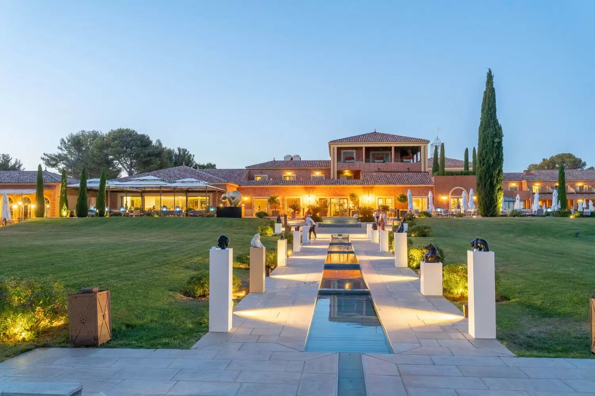
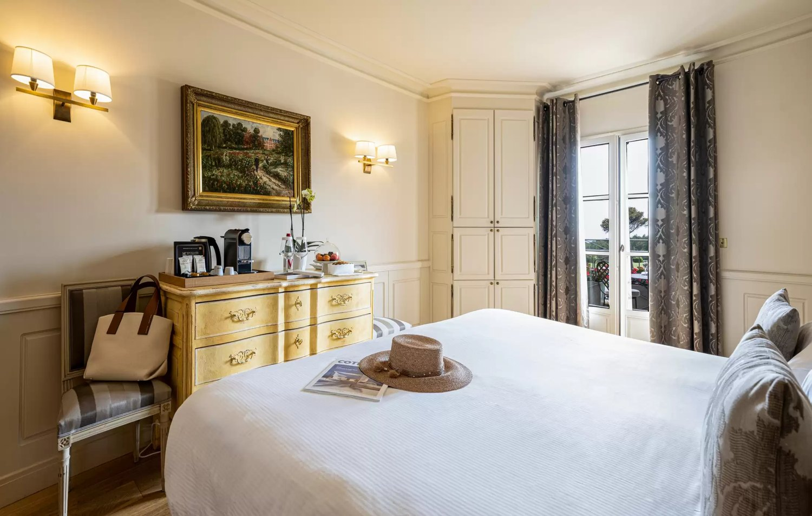
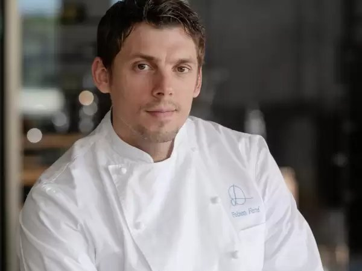
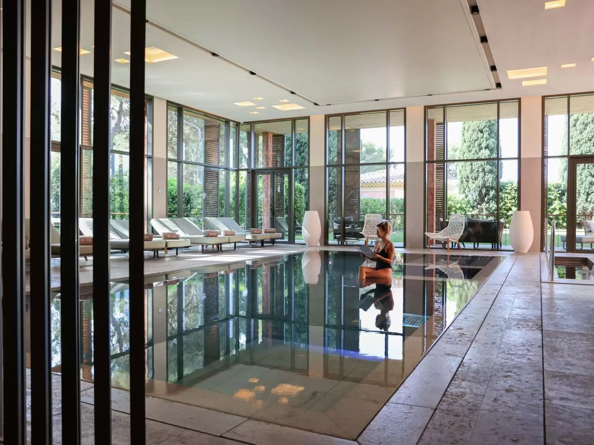
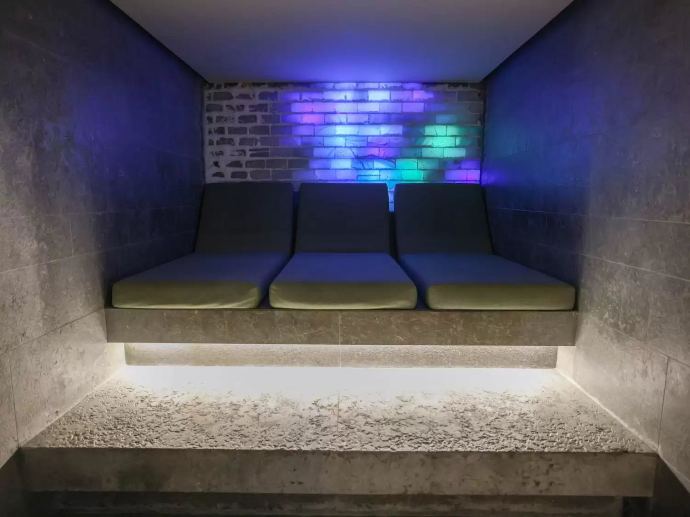

Hôtel & Spa du Castellet : le 5 étoiles du Var qui a formé son propre chef
Douze hectares au-dessus de la Méditerranée, une maison née pour loger les pilotes du circuit Paul Ricard, et une table qui a décroché trois étoiles avec le sous-chef de la maison.

La maison au crépuscule, au bout de son bassin. Photo : Hôtel & Spa du Castellet, site officiel.
L'essentielCe qui distingue vraiment cette maison
- Une table trois étoiles obtenue en interne. Fabien Ferré a été sous-chef de Christophe Bacquié pendant dix ans dans cette maison avant de lui succéder. Il est le plus jeune chef trois étoiles de France, à 35 ans.
- Un spa primé deux fois. 700 m2, sept cabines, et une distinction européenne : Meilleur Spa de Luxe en Europe aux World Luxury Spa Awards 2019, puis Meilleur Soin Luxe aux Luxe Global Awards 2023.
- Douze hectares et quarante-trois clés. Des bastides et villas ocre d'inspiration toscane dispersées dans un parc, avec vue sur la Méditerranée. La densité est faible, et c'est le sujet.
Il y a des maisons qui achètent leur chef et d'autres qui le forment. Le Castellet appartient à la seconde catégorie, ce qui est plus rare qu'on ne le croit à ce niveau, et cela dit quelque chose de la maison bien au-delà de sa cuisine. Nous l'évaluons 9,2/10 au Score LMHS, avec un Indice Var de 4,7/5, notre indice thématique pour cette page.
D'un hôtel de pilotes à un Relais & Châteaux
L'origine de la maison n'a rien de champêtre : elle a d'abord été destinée aux pilotes engagés sur le circuit Paul Ricard, tout proche. Elle s'est transformée au fil du temps en un cinq étoiles, membre des Relais & Châteaux et détenteur de trois clefs MICHELIN, la distinction hôtelière que le Guide a créée pour ses adresses de séjour. L'histoire explique la géographie du lieu, à quelques minutes du village médiéval du Castellet, à deux pas des vignobles de Bandol et des plages de Sanary-sur-Mer et Saint-Cyr-sur-Mer.
Le bâti tient sa promesse sans forcer. Les bastides et villas ocre, dont l'architecture évoque la Toscane, sont dispersées dans le parc plutôt que rassemblées en un bloc, ce qui donne au domaine son échelle et sa discrétion. La douceur de vivre annoncée n'est pas une formule : elle tient au soin du détail à la réception et à un service attentionné, sur un registre volontairement éloigné du luxe tapageur.
Quarante-trois clés, toutes orientées au sud

Cosy chic, terrasse privative et couleurs de Provence
Les 43 chambres et suites sont toutes orientées au sud et disposent chacune d'une terrasse privative, ce qui est le vrai luxe de la maison : on y prend son petit-déjeuner. La décoration tient un esprit cosy chic aux couleurs douces, dans un hommage assumé à la Provence.
Les surfaces sont honnêtes et clairement étagées : de 27 à 32 m2 pour les chambres, de 50 à 70 m2 pour les suites. Au sommet, la Suite Exception de 150 m2 change complètement de registre : noir et blanc, design contemporain, avec sa propre salle de fitness, son hammam, une terrasse panoramique et un accès privatif. C'est un appartement autant qu'une suite, et c'est la clé à réserver si le budget le permet.
La Table du Castellet : trois étoiles pour Fabien Ferré

Dix ans de second, puis le titre
Fabien Ferré a été sous-chef de Christophe Bacquié pendant dix ans, ici même, avant de lui succéder. Il a décroché trois étoiles au Guide MICHELIN en 2024 et devient à cette occasion le plus jeune chef trois étoiles de France, à 35 ans. C'est un parcours de maison, pas de transfert.
La salle joue une décoration contemporaine, tons clairs, bois et ardoise, largement ouverte sur la nature environnante. La cuisine met en avant la Provence et la Méditerranée avec des produits sourcés chez les meilleurs producteurs de la région, et se structure en deux menus : Expression Marine et Expression Végétale. C'est le motif principal d'un séjour ici, et il suffirait à lui seul.
La maison exploite une seconde table, le San Felice, sous la direction de Thibaud Durix, chef adjoint de Fabien Ferré. Registre bistrotier, plats de partage d'inspiration provençale et méditerranéenne, face à la nature et à la mer au loin. Sa spécialité mérite d'être connue avant de réserver : la cuisson à la braise, qu'il s'agisse de viandes d'exception, de langoustes ou de poissons issus de la pêche durable. C'est l'adresse des familles et des tablées.
Le spa : 700 m2, sept cabines et un canal de Kneipp

Deux distinctions internationales
Le spa a été élu Meilleur Spa de Luxe en Europe par les World Luxury Spa Awards 2019, puis Meilleur Soin Luxe aux Luxe Global Awards 2023. Il déploie 700 m2 et sept cabines, dont une cabine duo et une suite.
L'équipement est complet et cohérent : un parcours sensoriel, une piscine intérieure avec bassins bouillonnants, un sauna, une fontaine de glace, un hammam et une grotte de sel. Le détail à ne pas manquer est le canal de Kneipp : on y marche en alternant courants chauds et froids, un exercice dont l'effet sur la circulation sanguine et lymphatique est le vrai bénéfice de la visite. Les soins sont dispensés sous la marque Sym Biologic System.

La grotte de sel du spa. Photo : Hôtel & Spa du Castellet, site officiel.
Hôtel & Spa du Castellet en bref
| Adresse | 3001 route des Hauts du Camp, 83330 Le Castellet, Var |
| Téléphone | +33 4 94 98 37 77 |
| Catégorie | 5 étoiles, Relais & Châteaux, trois clefs MICHELIN |
| Capacité | 43 chambres et suites, dont la Suite Exception de 150 m² |
| Surfaces | 27 à 32 m² pour les chambres, 50 à 70 m² pour les suites |
| Domaine | 12 hectares, vue sur la Méditerranée |
| Tables | La Table du Castellet (3 étoiles MICHELIN, Fabien Ferré) et le San Felice (Thibaud Durix) |
| Spa | 700 m², 7 cabines dont une duo et une suite, piscine intérieure, sauna, hammam, grotte de sel, canal de Kneipp, soins Sym Biologic System |
| Distinctions du spa | Meilleur Spa de Luxe en Europe 2019, Meilleur Soin Luxe 2023 |
| Activités | Swing Center et cours de golf, piscine extérieure, gazébos, pétanque, boutique |
| Accès | Entre Toulon et Marseille, à quelques minutes du circuit Paul Ricard |
| Score LMHS | 9,2/10 · Indice Var 4,7/5 |
Adresse et téléphone relevés le 1er septembre 2026 sur le site officiel de l'établissement. Aucun tarif n'est publié dans cette page, faute d'en trouver à la source.
Ce qu'on fait ici quand on ne mange pas et qu'on ne nage pas
- Le Swing Center, centre d'entraînement au golf installé à l'hôtel, avec des cours pour débutants comme pour joueurs confirmés.
- Le bar, ponctué de petites alcôves, avec cheminée, pierres naturelles, camaïeu de beige et une large terrasse avec vue.
- Les gazébos dispersés dans le parc, pour une sieste ou une parenthèse à deux.
- La boutique, où figure la gamme 8Js conçue par Sacha Prost, fils de l'ancien pilote Alain Prost, en référence au circuit voisin.
- Le terrain de pétanque, qui n'est pas une clause de style dans le Var.
Pour qui cette maison est faite
Pour les gourmets, d'abord, et sans concurrence sérieuse dans le département : une table trois étoiles ne se trouve pas partout, et celle-ci est adossée à un hôtel qui permet de ne pas reprendre la voiture après le dîner. Pour ceux, ensuite, qui veulent alterner le sport, la piscine extérieure, le spa et les gazébos sans que la journée ressemble à un programme. Le registre est celui d'une élégance décontractée, à distance du luxe démonstratif.
Ce n'est en revanche pas une adresse de bord de mer : la Méditerranée se regarde depuis le parc, elle ne se touche pas. Et l'implantation, à quelques minutes du circuit Paul Ricard entre Toulon et Marseille, suppose une voiture.
Questions fréquentes sur l'Hôtel & Spa du Castellet
Combien d'étoiles MICHELIN a la table de l'Hôtel du Castellet ?
Trois, obtenues en 2024. La Table du Castellet est dirigée par Fabien Ferré, qui en devient à cette occasion le plus jeune chef trois étoiles de France, à 35 ans. Il avait été sous-chef de Christophe Bacquié pendant dix ans dans cette même maison. L'hôtel détient par ailleurs trois clefs MICHELIN.
Que trouve-t-on dans le spa de l'Hôtel du Castellet ?
Sur 700 m2 : sept cabines dont une duo et une suite, un parcours sensoriel, une piscine intérieure avec bassins bouillonnants, un sauna, une fontaine de glace, un hammam, une grotte de sel et un canal de Kneipp, dont l'alternance de courants chauds et froids agit sur la circulation sanguine et lymphatique. Les soins sont dispensés sous la marque Sym Biologic System.
Combien de chambres compte l'Hôtel & Spa du Castellet ?
43 chambres et suites, toutes orientées au sud et toutes dotées d'une terrasse privative. Les chambres font de 27 à 32 m2, les suites de 50 à 70 m2, et la Suite Exception atteint 150 m2, avec salle de fitness, hammam, terrasse panoramique et accès privatif.
Le spa a-t-il reçu des distinctions ?
Deux. Il a été élu Meilleur Spa de Luxe en Europe par les World Luxury Spa Awards 2019, puis récompensé du Meilleur Soin Luxe aux Luxe Global Awards 2023.
Où se situe exactement l'Hôtel & Spa du Castellet ?
3001 route des Hauts du Camp, 83330 Le Castellet, dans le Var, entre Toulon et Marseille. La maison est à quelques minutes du circuit Paul Ricard et du village médiéval du Castellet, à deux pas des vignobles de Bandol et des plages de Sanary-sur-Mer et Saint-Cyr-sur-Mer.
Y a-t-il un second restaurant ?
Oui, le San Felice, dirigé par Thibaud Durix, chef adjoint de Fabien Ferré. Le registre est bistrotier, autour de plats de partage d'inspiration provençale et méditerranéenne, avec une spécialité maison : la cuisson à la braise, viandes d'exception, langoustes et poissons issus de la pêche durable.
Le mot de SwannUne maison qui a promu son second
Ce qui me retient ici n'est pas le nombre d'étoiles, c'est la manière dont elles sont arrivées. Dix ans de second auprès de Christophe Bacquié, puis la succession, puis les trois étoiles à trente-cinq ans : c'est une trajectoire interne, et elle est devenue rare dans une hôtellerie qui recrute des noms plutôt que des équipes. Le reste de la maison suit la même logique de continuité, un parc de douze hectares où les bâtiments se dispersent au lieu de s'imposer, un spa primé mais discret, un bar à alcôves plutôt qu'un lobby à voir et à être vu. On vient au Castellet pour une table qui vaut le voyage. On y reste pour une échelle qui ne cherche pas à impressionner.
Swann Bertaud, rédacteur hôtellerie de luxe
Méthode et sources
Avis documentaire. Nous n'avons pas séjourné dans cet établissement. Catégorie, capacité, surfaces, tables, distinctions, offre bien-être et activités relevées le 1er septembre 2026. Adresse et téléphone vérifiés sur le site officiel de l'établissement. Aucun tarif n'est publié dans cette page : la maison n'en affiche pas sur son site, et nous ne reprenons pas un prix d'appel que nous ne pouvons pas vérifier à la source. Le Score LMHS sur 10 relève de la grille LMHS Destination ; l'Indice Var sur 5 est un indice thématique propre à cette page, qui mesure l'ancrage territorial. Aucun partenariat commercial, aucune affiliation. Photographies : Hôtel & Spa du Castellet, site officiel.
Pour aller plus loin
- Villa M, à Marseille, l'autre grande adresse bien-être de la région, à une heure de route
- Villa Gallici, à Aix-en-Provence, l'autre 5 étoiles provençal de nos avis
- Hôtel Le Provençal, à Giens, sur la presqu'île, à une heure de route
- Hôtels de charme en Provence : 12 maisons d'exception
- Les 50 meilleurs hôtels et spas de France, palmarès national 2026
- Notre méthode, les grilles de notation et les règles d'indépendance